Нахождение собственного значения и собственной величины матрицы
Собственными значениями матрицы называются такие скалярные величины, которые есть корнями уравнения
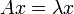
Если во, 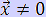 перепишем равенство, записанное выше:
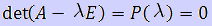
Если этот определитель раскрыт относительно значений , то полученно так называемое характеристическое уравнение матрицы
в виде полинома n-ной степени. Решение этого уравнения определяет множество собственных значений матрицы, которые называются спектром этой матрицы.
Каждому собственному значению отвечает свой собственный вектор.
Чтобы вычислить собственные значения и собственные векторы, используем метод Крылова.
Метод основывается на известной теореме Келли-Гамильтона, которая утверждает, что какая-либо матрица А удовлетворяет своему характеристическому уравнению:
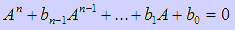
Если это выражение умножить на произвольный вектор, то можно получить выражение:
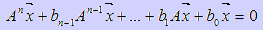
Обозначим:
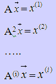
В результате получим:
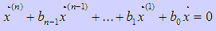
Следовательно:
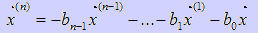
На основании этих формул формируем систему линейных алгебраических уравнений для коэффициентов характеристического полинома матрицы:
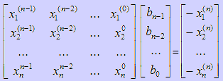
Решая эту систему, мы найдем коэффициенты. Если система будет вырожденной, необходимо заменить начальный вектор , который для удобства в основном берут:
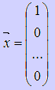
Практическая часть
Пошаговые действия |
Пояснения к действиям |
| 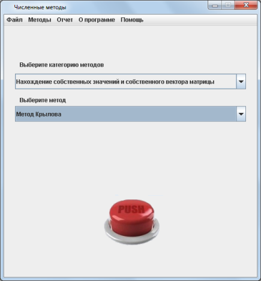 | 1. Заходим в программу. Появляется окно, показанное на рисунке. Выбираем категорию методов "Нахождение собственного значения и собственной величины матрицы". Метод Крылова выбирается автоматически, так как он единственный. Нажимаем кнопку "PUSH". |
| 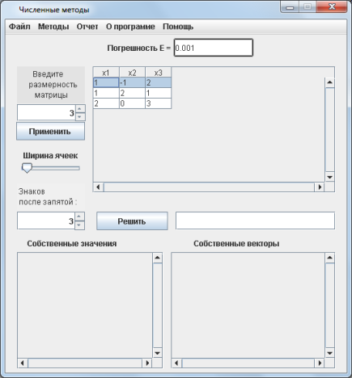 | 2. Появляется окошко, показнное на рисунке слева. Сначала вводим размерность матрицы и нажимаем кнопку "примнить". Послде чего в поле справа появится
матрица для ввода данных. В каждую ячейку вам нужно ввести коэффициенты матрицы, собственные значения которой вам нужно найти. Будьте внимательны при вводе данных!
После ввода данных, необходимо нажать кнопку "Решить". |
| 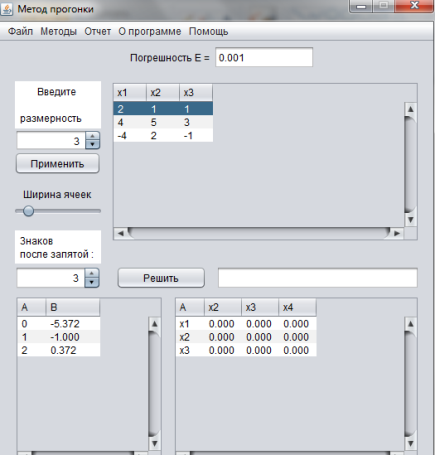 | 3. После этого, в двух полях, расположенных внизу экранной формы, выводятся собственные значения и собственные векторы. |
| 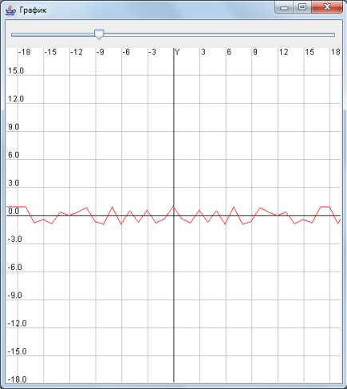 | 4. После того, как вы получили ответ, можно просмотреть график. Для этого нужно нажать кнопку, расположенную под решением, в самом низу экранной формы - "Посмотреть график". Появится окно, показанное слева. Бегунки, расположенные вверху и справа экранной формы увеличивает/уменьшает размер клеток сетки. |
 |
5. После того, как вы получили ответ, можно просмотреть отчет, где предоставлено поэтапное решение. Для этого необходимо в главном меню программы, расположенном на верху экранной формы выбрать пункт "Отчет/Просмотр отчета". Вы увидите окно, расположенное слева. Также можно сохранить этот отчет нажав кнопку главного меню "Отчет/Сохранить отчет". |
 |
6. Если решение примера может пригодится вам в будущем, вы можете сохранить его с помощью конпки меню "Файл/Сохранить". В окне, которое появится(оно показано на рисунке слева) необходимо выбрать папку, в которую он сохранится и написать название. |